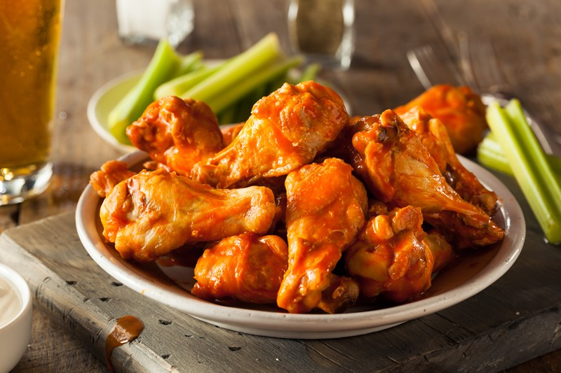
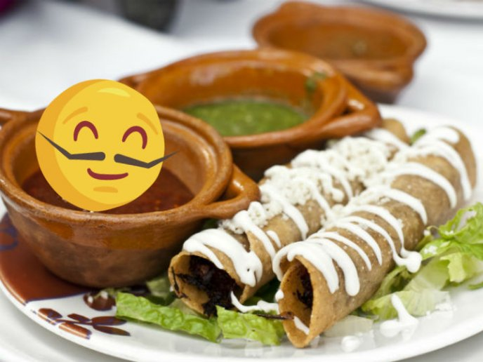
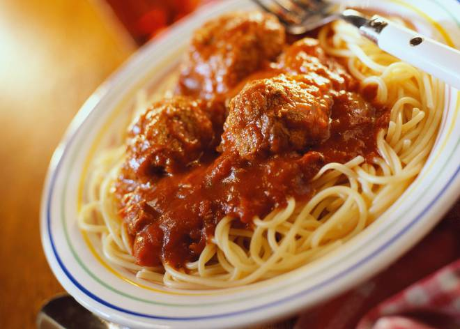
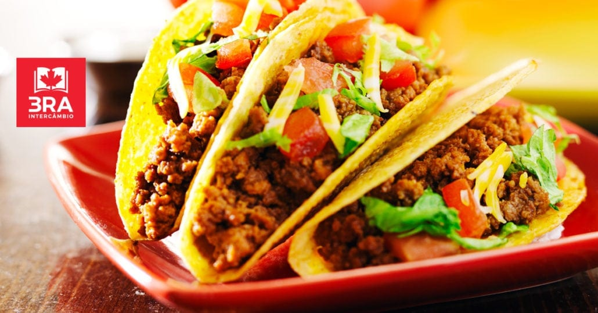
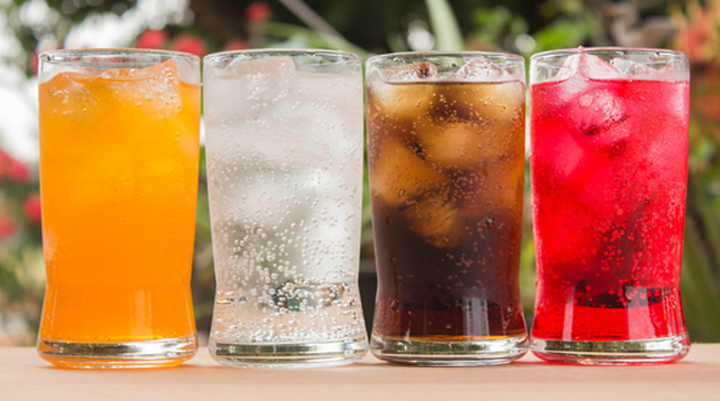

Nuestro Menu:

Hamburguesas:
Se presenta en un pan ligero partido en dos que posee una forma de óvalo. Acompañada de aros de cebolla, hojas de lechuga, alguna rodaja de tomate, láminas de encurtidos, patatas fritas etc. Los condimentos pueden ser: salsa de tomate, mostaza, relish, mayonesa, etc.1 En el caso de que se ponga una lámina de queso procesado se convierte en una hamburguesa con queso

Alitas:
son secciones de pollo que corresponden a las alas (a veces se hacen con cualquier otra ave de corral) que se fríen y se recubren en salsas especiales. La tradicional ala de pollo elaborada al estilo Buffalo se compone de dos ingredientes: una salsa picante (a base de vinagre y cayena) y margarina o mantequilla

Flautas:
es un platillo de la gastronomía mexicana, de los conocidos como «antojitos mexicanos»,1 son tacos hechos de tortilla de harina enrollada sin dorar, los cuales pueden tener diferente contenido como: carne deshebrada, picadillo, papa, frijoles, queso entre otros. Se sirven acompañadas de cualquier salsa, limón, lechuga o repollo, con tomate, y algunas veces se les pone crema, según el gusto de la persona.
Pizza:
La pizza es un pan plano horneado, habitualmente de forma redonda, elaborado con harina de trigo, sal, agua y levadura, cubierto con salsa de tomate y queso.1 Existen gran cantidad de variedades, principalmente debido al formato del pan, la forma de cocinarlo y el agregado de diversos ingredientes salami, tomate, champiñones, cebolla, jamón, aceitunas, morrones

Espagueti:
es un tipo de pasta italiana elaborada con harina de grano duro y agua. Tiene forma de delgada cuerda larga, sección circular y un tamaño aproximado entre 25 y 30 centímetros. Se trata de uno de los ingredientes más representativos de la gastronomía italiana cuya popularidad trasciende a otros países.

Tacos:
Un taco es una preparación mexicana que en su forma estándar consiste en una tortilla (generalmente de maíz, también de harina de trigo, de nopal o de algún otro ingrediente) que contiene algún alimento encima. Es considerado como uno de los platillos más representativos de la comida mexicana.Bebidas:
Las bebidas alcohólicas son aquellas bebidas que contienen etanol en su composición. Atendiendo a la elaboración se pueden distinguir entre las bebidas producidas simplemente por fermentación alcohólica en las que el contenido en alcohol no suele superar los 15 grados, y las producidas por destilación, generalmente a partir de un producto de fermentación previo
